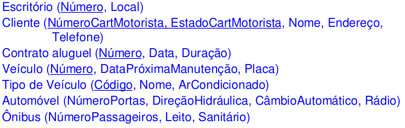

Exercícios 1
1.1 Uma aplicação de banco de dados chamado EMPRESA.
A empresa está organizada em departamentos. Cada departamento tem um nome único, um número único, pode ter diversas localizações e um empregado que gerencia o departamento. Temos a data em que o empregado começou a gerenciar o departamento. Nem todo empregado gerencia necessariamente um departamento, mas um departamento deve ter um gerente. Um departamento pode controlar um número qualquer de projetos, cada qual com um único nome, um único número e uma única localização. Armazenamos o nome de cada empregado (Pnome + Unome), o número do seguro social, endereço, salário, sexo e data de nascimento. Um empregado obrigatoriamente está alocado a um departamento, mas pode trabalhar em diversos projetos que não são controlados, necessariamente, pelo mesmo departamento. Um empregado deve participar de um projeto e um projeto deve vincular empregados, obrigatoriamente. Controlamos o número de horas semanais que um empregado trabalha em cada projeto. Também controlamos o supervisor direto de cada empregado, quando isto acontece. Queremos ter o controle dos dependentes de cada empregado para fins de seguro. Guardamos o primeiro nome, sexo, data de nascimento de cada dependente, e o parentesco dele com o empregado.
Faça um DER para esse domínio.
1.2 Controle de um museu (Sistemas de Banco de Dados, Esmasri & Navathe)
Projete um banco de dados para controlar as informações de um museu de arte. Suponha que os seguintes requisitos sejam coletados:
-
O museu tem um coleção de objetos de arte. Cada objeto tem um único identificador, um artista (se conhecido), um ano (quando foi criado, se conhecido), um título e uma descrição. Os objetos de arte são categorizados de diversas formas, conforme apresentado a seguir.
-
Os objetos são categorizados de acordo com o tipo. Há três principais: PINTURA, ESCULTURA, e outro tipo chamado OUTROS, para acomodar os objetos que não se enquadram em um dos dois tipos principais;
-
Uma PINTURA tem um tipo de tinta (óleo, aquarela etc.), o suporte em que é desenhada (papel, tela, madeira etc.) e estilo (moderno, abstrato etc.);
-
Uma ESCULTURA ou uma ESTATUARIA tem um material do qual foi criada (madeira, pedra etc.), altura, peso e estilo;
-
Um objeto de arte da categoria OUTROS possui um tipo (gravura, foto etc.) e estilo;
-
Os objetos de arte também são categorizados como COLECAO PERMANENTE, que são propriedade do museu (contêm informação sobre a data de aquisição, se estão em exposição ou no depósito e o custo, ou EMPRESTADO, que possui informação referente à coleção (da qual foi emprestado), data de empréstimo e data de devolução.
-
-
O museu controla as informações a respeito do artista, se conhecido: nome, data de nascimento (se conhecida), data da morte, país de origem, período, estilo principal e descrição. Admite-se o nome como único;
-
Diferentes exposições ocorrem, cada uma tendo um nome, data de início e data final. As exposições estão relacionadas a todos os objetos de arte que estiveram em exibição durante o evento;
-
São mantidas as informações de outras coleções com as quais o museu mantém contato, incluindo nome (único), tipo (museu, pessoal etc.), descrição, endereço, telefone atual e pessoa para contato;
-
Desenhe um diagrama do esquema ERR para essa aplicação. Discuta todas as considerações fetias por você e justifique suas escolhas para o projeto ERR.
1.3 Seguradora (Sistema de Banco de Dados, Silberschatz, Korth e Sudarshan)
Construa um diagrama ER para uma seguradora de automóveis em que cada cliente possui um ou mais carros. Cada carro tem associado a ele de zero a qualquer número de acidentes registrados. Para cada acidente deve ser armazenado o grau de dano. Considere atributos para cada entidade envolvida.
1.4 Administradora de imóveis (Projeto de Banco de Dados, Carlos Alberto Heuser)
Construa um diagrama ER para a administradora de imóveis descrita abaixo.
-
A administradora trabalha tanto com administração de condomínios, quanto com a administração de aluguéis;
-
Uma entrevista com o gerente da administradora resultou nas seguintes informações: a administradora administra condomínios formados por unidades condominiais; cada unidade condominial é de propriedade de uma ou mais pessoas. Uma pessoa pode possuir diversas unidades; e, cada unidade pode estar alugada para no máximo uma pessoa. Uma pessoa pode alugar diversas unidades.
1.5 Universidade (Sistema de Banco de Dados, Silberschatz, Korth e Sudarshan)
Um órgão de registro universitário mantém dados sobre as seguintes entidades: (a) cursos, incluindo número, título, créditos, roteiro e pré-requisitos; (b) ofertas de cursos, incluindo número do curso, ano, semestre, número de seção, instrutor(es) , programações e turma; (c) alunos, incluindo id_aluno, nome e programa; e (d) instrutores, incluindo número de identificação, nome, departamento e título. Além disso, a matrícula de alunos em curso e os períodos cumpridos pelos alunos em cada curso em que são matriculados precisam ser corretamente modelados. Construa um DER para o órgão de registro. Documente todas as suposições que você fizer sobre as restrições de mapeamento.
1.6 Sistema para locadora de veículos (Projeto de Banco de Dados, Carlos Alberto Heuser)
O objetivo deste estudo de caso é construir um diagrama ER para o banco de dados de uma empresa de locação de veículos. A empresa em questão aluga automóveis, caminhonetes de passageiros e caminhonetes de carga. Ela atende a dois mercados, o das pessoas físicas e o das pessoas jurídicas.
Para acelerar o atendimento, é importante conhecer os dados dos clientes que já tenham usado a locadora no passado. Para cada pessoa física é necessário conhecer seu nome, sexo, data de nascimento, endereço e CPF. Já para as pessoas jurídicas é necessário conhecer seu nome, CNPJ, inscrição estadual e endereço. Os clientes são identificados por um código interno a locadora.
A empresa tem uma grande rede de filiais, espalhada pelo sul do país. Em um momento no tempo, um veículo encontra-se sob responsabilidade de uma filial. Entretanto, como veículos podem ser alugados para viagens em um sentido somente, eles podem mudar de filial. Um veículo é identificado pela sua placa. Além disso, é necessário conhecer o número do chassis, o número do motor, o tipo de veículo e a cor de cada veículo.
O sistema em computador deverá registrar: os veículos disponíveis em determinada filial na data corrente; as reservas para cada veículo em uma filial, com previsão de que veículos estarão disponíveis em uma data futura; e, os veículos presentemente alugados pela filial, o ponto de entrega (caso seja diferente do de locação) e data de entrega prevista.
Os veículos são classificados por uma tabela de tipos. Por exemplo, P3 corresponde a automóveis pequenos, de quatro portas e com ar-condicionado e G4 a grandes automóveis de luxo. Asreservas não são feitas para uma marca ou modelo de veículo, mas para um tipo de veículo.
Para tipos de automóveis, os clientes desejam saber o tamanho, classificado em pequeno, médio e grande, o número de passageiros, o número de portas, bem como se possui os seguintes acessórios: ar-condicionado, rádio, CD, MP3, direção hidráulica e câmbio automático. Para tipos de camionetas de passageiros, as informações são as mesmas que para automóveis. Já para tipos de caminhonetes de carga, as informações acima não são relevantes. Neste caso, clientes desejam saber a capacidade de carga da caminhonete.
Para cada tipo de veículo, há um determinado número de horas necessário para limpeza e revisão de entrega, entre uma reserva e outra.
Além disso, o sistema deve programar as revisões dos veículos, impedindo que sejam reservados quando há revisões pendentes. Esta programação é feita com base em um conjunto de parâmetros que são a quilometragem atual do veículo, a quilometragem média diária de um veículo do tipo, bem como em uma tabela de revisões do tipo de veículo.
A seguradora que segura os veículos, exige que, para cada veículo alugado, seja mantida a identificação do motorista, o número de sua habilitação e data de vencimento da mesma. A habilitação não pode vencer dentro do prazo de locação.
1.7 Controle de organização de eventos (Sistemas de Banco de Dados, Esmasri & Navathe)
Deseja-se construir um sistema de computador para apoiar a organização de congressos de trabalho da IFIP (Federação Internacional de Processamento de Informações). A IFIP é uma sociedade que congrega as sociedades nacionais de informática de diversos países.
Dentro da IFIP, atuam grupos de trabalho (GT). Cada GT trata de um determinado assunto. Cada GT recebe um código que é denominado segundo o assunto de que trata. Um dos objetivos de um GT é o de promover de forma regular congressos de trabalho.
Um congresso de trabalho é um encontro com número limitado de participantes (50-100) dos quais espera-se participação ativa. No congresso são apresentados e discutidos trabalhos originais de participantes.
Para possibilitar que os participantes obtenham financiamento para sua ida ao congresso é importante assegurar que a seleção dos trabalhos apresentados seja feita de maneira imparcial por especialistas reconhecidos na área do congresso. O congresso é identificado por um código e possui um nome, um local e uma data de realização.
A IFIP recomenda que a preparação do congresso seja feita por dois comitês, o comitê organizador e o comitê de programa, montados especialmente para cada congresso.
O comitê de programa (CP) executa as funções listadas abaixo:
-
O CP está encarregado de recepção de artigos submetidos, controlando se eles estão dentro do prazo. Um artigo é um trabalho que um ou mais autores pretendem apresentar no congresso e que será publicado em seus anais. Os anais são normalmente publicados por editoras comerciais. Por isso, os artigos devem ser originais, isto é, cada artigo somente pode ser submetido a um congresso. Os artigos são numerados seqüencialmente dentro de um congresso, à medida que vão sendo recebidos. É necessário saber o título do artigo, bem como seus autores;
-
Antes do início da avaliação dos artigos, o CP deve montar um corpo de avaliadores externos que irá ler cada artigo e emitir uma opinião sobre o artigo. Normalmente, mas não necessariamente, avaliadores externos são pessoas que já participaram de congressos anteriores sobre o mesmo tema. Somente será cadastrado como avaliador de um congresso aquele que, após convidado para tal, o aceitar explicitamente;
-
À medida que os artigos forem sendo recebidos, eles devem ser distribuídos aos avaliadores previamente cadastrados. Cada artigo deve ser distribuído a pelo menos três avaliadores. Um avaliador nunca deve estar com mais de um artigo em um instante de tempo;
-
O CP está encarregado de fazer o julgamento dos artigos. No julgamento, o CP decide quais artigos serão aceitos e quais serão rejeitados com base nos pareceres dos avaliadores. O julgamento acontece um certo tempo depois do fim do prazo de recepção dos artigos;
-
Após o julgamento o CP deve montar o programa do congresso, isto é, agrupar os artigos aceitos em sessões e escolher um moderador para cada sessão. Uma sessão é um grupo de artigos que tratam de um assunto comum e que são apresentados em um determinado horário. Por tratar-se de um congresso de trabalho, não há sessões em paralelo, isto é, em um congresso, em um momento no tempo, não pode ocorrer mais que uma sessão. Assim, a sessão é identificada pelo congresso e pelo horário em que ocorre;
-
Além das tarefas acima, o CP está encarregado de toda comunicação com os autores e com os avaliadores.
O comitê organizador (CO) está encarregado de toda parte financeira e organização local do congresso. Para fins do estudo de caso, vamos considerar apenas as seguintes atividades:
-
Com boa antecedência, o CO deve emitir as chamadas de trabalho do congresso . A chamada de trabalhos é um texto que divulga o congresso e que convida as pessoas a submeter artigos ao congresso. Esta chamada é amplamente divulgada em listas eletrônicas, periódicos, etc. Além disso ela deve ser enviada pessoalmente, por correio eletrônico, às seguintes pessoas:
-
Membros dos GT que promovem o congresso;
-
Pessoas que de alguma forma já participaram de congressos promovidos pelos GT que promovem o congresso e;
- Pessoas sugeridas para tal pelos membros dos GT que promovem o congresso.
-
Neste envio, devem ser evitadas redundâncias.
Após montado o programa pelo CP, o CO deve emitir os convites para participação no congresso. Por tratar-se de congressos de trabalho, apenas pessoas convidadas podem inscrever-se. São convidados:
- Os autores de trabalhos submetidos ao congresso;
- Os avaliadores externos do congresso;
- Os membros de CO e do CP do congresso, e;
- Os membros do GT que promovem o congresso.
Finalmente, cabe ao CO executar as inscrições dos convidados que aceitarem o convite, controlando o prazo de inscrição e verificando se a pessoa é efetivamente convidada.
Observar que uma mesma pessoa pode atuar em muitas funções, mesmo em um mesmo congresso. A única restrição importante é que uma pessoa não pode avaliar o seu próprio artigo.
Como na preparação do congresso há considerável comunicação entre as diversas pessoas envolvidas, é necessário manter sempre atualizados os dados de acesso a pessoa, como seu endereço, seu telefone, seu número de fax e principalmente seu endereço de correio eletrônico.
O objetivo do exercício é construir um modelo ER de um banco de dados que será compartilhado via Internet entre os diversos comitês dos congressos em organização pela IFIP. Neste banco de dados, estarão não só as informações sobre os congressos em organização, mas também sobre os dados do passado.
1.8 Sistema de reserva de passagens aéreas (Projeto de Banco de Dados, Carlos Alberto Heuser)
O objetivo do trabalho é projetar um sistema de reservas para uma companhia de aviação.
O sistema contará com um banco de dados central, que será acessado por aplicações clientes, rodando tanto dentro da própria companhia, quanto fora dela.
A transação central do sistema é a reserva. Uma reserva é identificada por um código gerado pelo sistema em computador. A reserva é feita para um único passageiro, do qual se conhece apenas o nome. A reserva compreende um conjunto de trechos de vôos, que acontecerão em determinada data/hora.
Para cada trecho, a reserva é feita em uma classe (econômica, executiva, etc.).
Um vôo é identificado por um código e possui uma origem e um destino. Por exemplo, o vôo 595 sai de Porto Alegre com destino a São Paulo.
Um vôo é composto de vários trechos, correspondendo às escalas intermediárias do vôo. Por exemplo, o vôo 595 é composto de dois trechos, um de Porto Alegre a Londrina, o outro de Londrina a São Paulo. Cabe salientar que há cidades que são servidas por vários aeroportos. Por isso, é importante informar ao passageiro que faz a reserva, qual é o aeroporto no qual o vôo passa.
Às vezes os clientes, ao fazer a reserva querem saber qual é o tipo de aeronave que será utilizada em determinado trecho de vôo. Alguns poucos vôos, principalmente internacionais, têm troca de aeronave em determinadas escalas.
Nem todos vôos operam em todos dias de semana. Inclusive, certos vôos têm pequenas mudanças de horário em certos dias da semana.
Cada reserva possui um prazo de validade. Caso os bilhetes não tenham sido emitidos, até esgotar-se o prazo da reserva, a mesma é cancelada. Reservas podem ser prorrogadas.
Como o "check-in" de todos os vôos está informatizado, a companhia possibilita a reserva de assento para o passageiro. Reservas de assento podem ser feitas com até três meses de antecedência.
Além de efetivar reservas, o sistema deve servir para vários tipos de consultas que os clientes podem querer fazer:
a) possibilidades de viagem de uma cidade ou de um aeroporto para outro;
b) o mesmo, mas restrito a determinados dias da semana;
c) horários de chegada ou de saída em determinados vôos;
d) disponibilidade de vagas em um trecho de vôo;
e) disponibilidade de determinados assentos em um trecho de vôo.
1.9 Exercício ER -> MR

